About Our Instruments
Do you know to how many chinese orchestra section is there? The orchestra is divided into four sections - Wind, plucked strings, bow strings, and percussion
Wind:
In chinese it also
call GuanYue, which is generally possessing loud volumes, are a crucial combination in folk
music. The sounds produced by wind instruments in the Chinese orchestra are often caused by the
vibration of air columns or free beating reeds and are very penetrative. As such, the section is seated at the back of the orchestra
According to records, in court orchestras of the Zhou Dynasty, instruments were already divided into tang shang yue and tang xia yue,
namely the group of stringed instruments (and vocals), and wind and percussion instruments respectively, tang shang yue instruments would be placed on raised platforms while the tang xia yue instruments would be placed on lower ground.
-
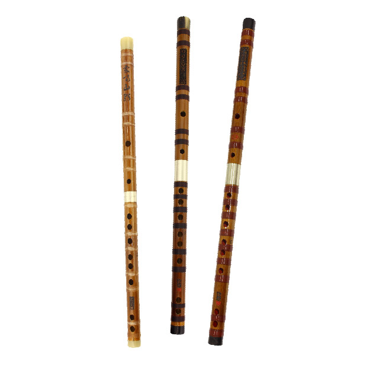
DiZi
The Dizi has a rich history of over 2000 years, and is one of China’s oldest and well-known instruments. -
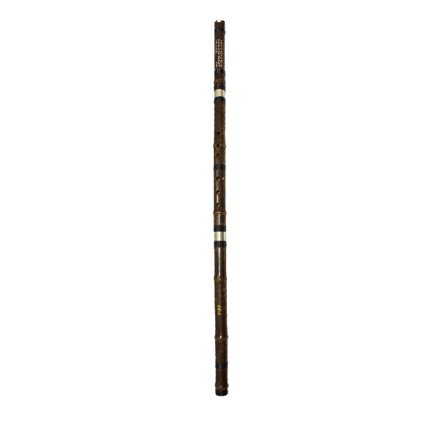
Xiao
The xiao is a vertical flute that is believed to have originated from Xi Qiang during the Han Dynasty. It had four finger holes and one blow hole. -
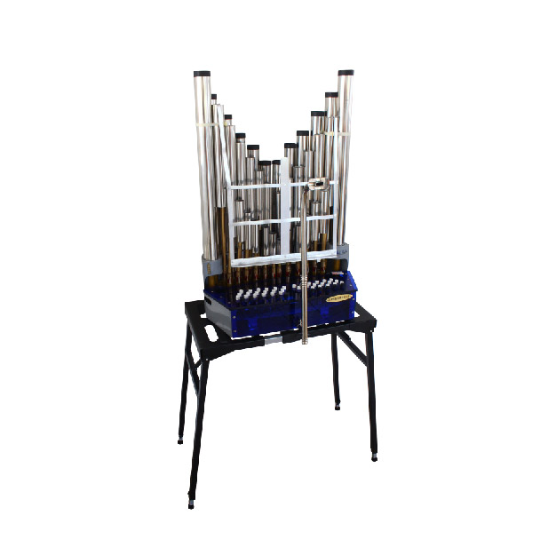
Sheng
One of the oldest Chinese reeded wind instruments, the sheng is a multi-reed mouth organ that consist of numerous bamboo pipes, varying in length. -

Xun
The xun is an ancient wind instrument made of mud or clay and likened to dragon eggs, due to its shape -
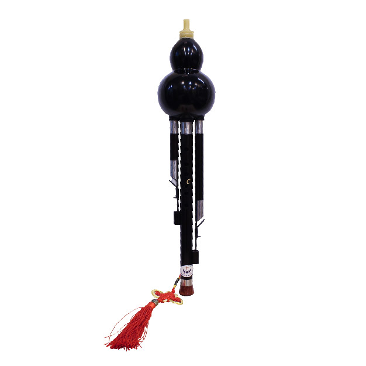
HuLuSi
A free-reed aerophone, the hulusi is usually played by Dai and Yi minority tribes in Yunnan, China -
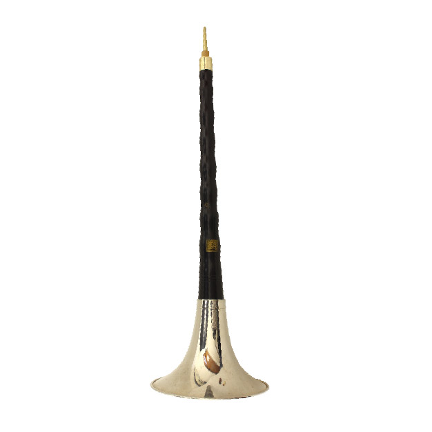
SuoNa
Known for its extremely loud sound and distinctively Northern flavour, the Suona has the ability to instinctively take the lead of all other instruments when played.
Bow strings:
In chinese it
call Huqin, The standard Huqins found in modern Chinese orchestras are the erhu, gaohu and zhonghu.
Sometimes, depending on the tunes being played, Huqins like banhu, jinghu, yehu would find their way into
the orchestra. There are more than 36 types of Huqins in Chinese culture.Huqins are played using a bow made of horse hair and the bow is lodge between the 2 strings of the instrument and
Huqins are one of the main foundations in Chinese orchestras.
-
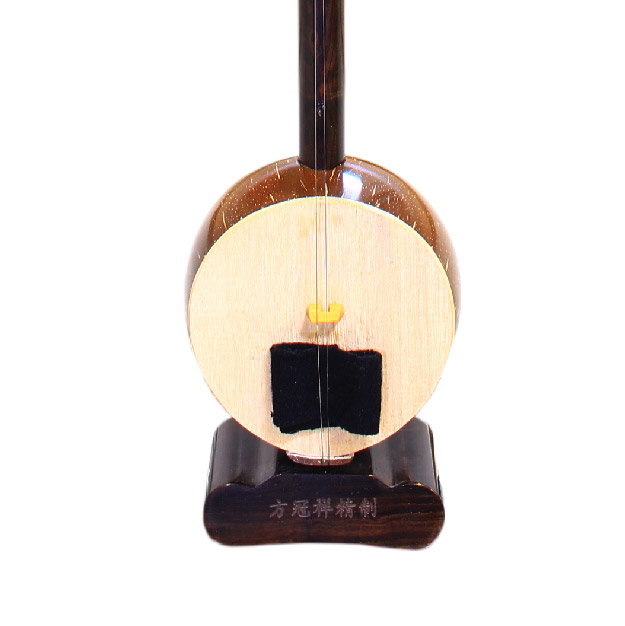
BanHu
A resonator made from wood instead of snakeskin. Very high pitched Huqin. -
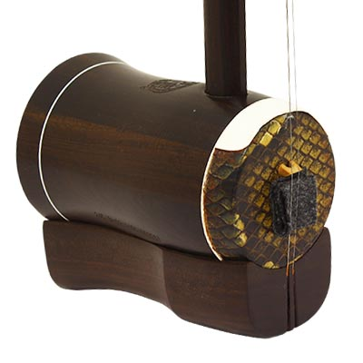
GaoHu
The higher pitched Huqins. Strings are tuned higher than Erhu at G, D. -
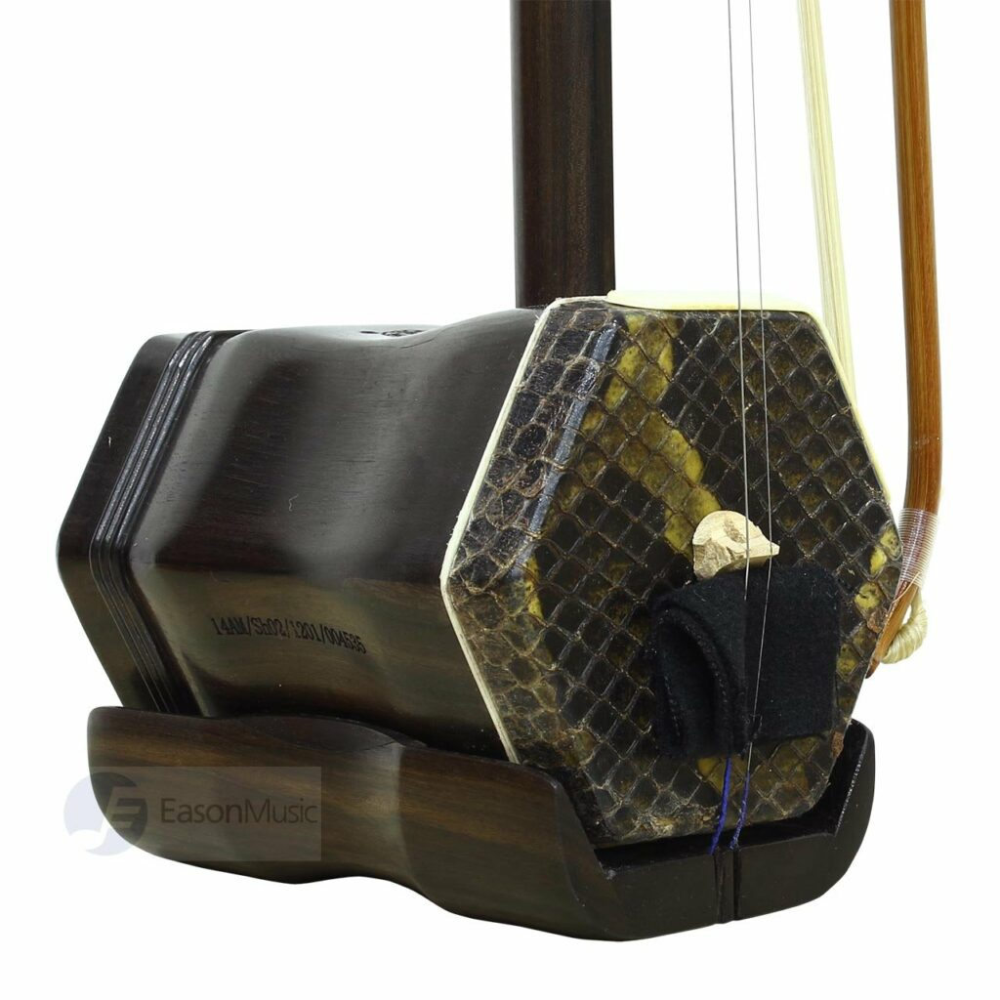
ErHu
The most common Huqin in the Chinese orchestra. The strings are tuned D, A. -
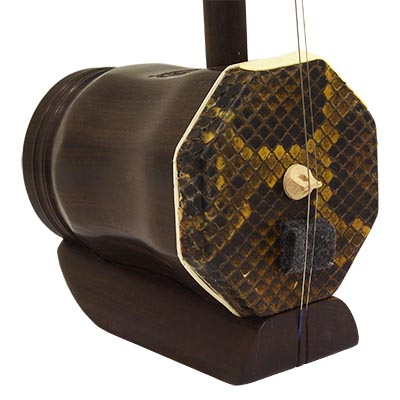
ZhongHu
The lower pitched Huqins. Strings are tuned lower than Erhu at G, D. -
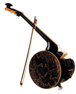
GeHu
A cello like Huqin with a resonator made from snakeskin.
Plucked String:
In chinese it
call Tanbo, There are hundreds of types of Chinese plucked string instruments. The more common
ones are the standard issues in the Chinese orchestra like yangqin, liuqin, pipa, ruan, guzheng, sanxian
and konghou. Other less common plucked string instruments are the guqin and yueqin.The plucked stringed
instrument section was incorporated into the Chinese orchestra mainly because of the pipa and guzheng.
These two instruments have a huge influence on Chinese traditional music, and many pioneers of the modern
Chinese orchestra play the plucked string instruments themselves.
-
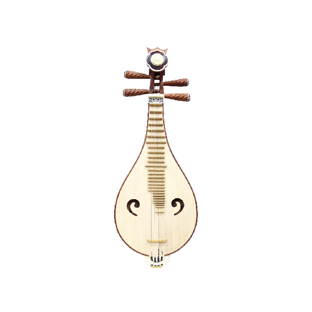
LiuQin
The plucked strings instrument that has the highest pitch. -
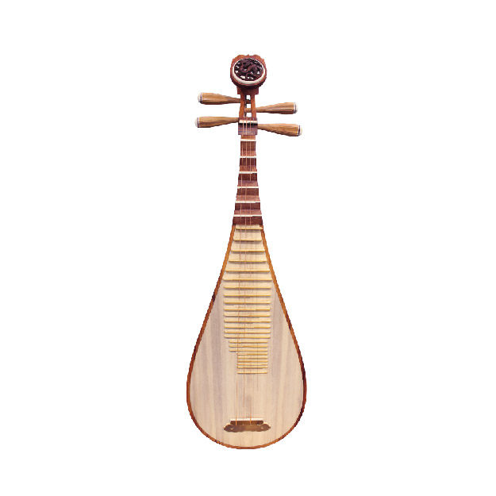
PiPa
An instrument with a rich heritage, the pipa lute is undeniably one of the most well-known plucked string instruments in the Chinese orchestra. -
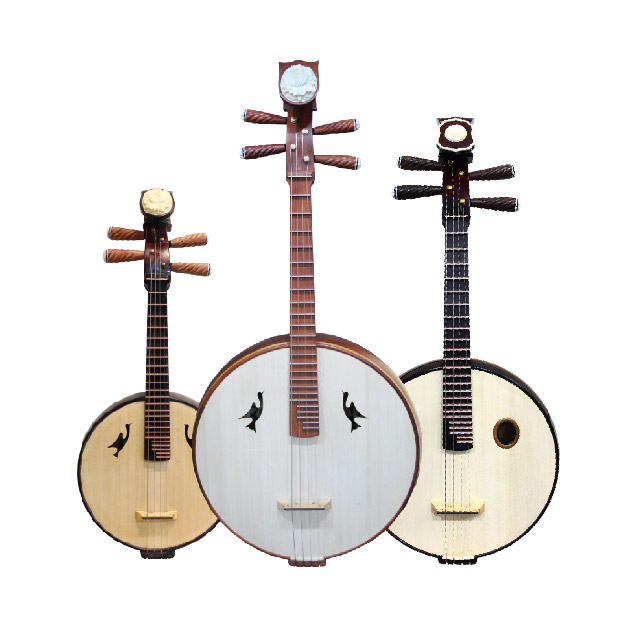
Ruan
Once one of China’s most ancient but extinct plucked string instruments, the Ruan has become one of the most important supporting instrument in the orchestra. Don't let the mellow tone fool you though. -

GuZheng
One of the most popular and iconic Chinese instruments known to people, the zheng is a generic term for a long, plucked string box zither. -

YangQin
Having 144 strings is not the only interest fact about this fascinating instrument. -
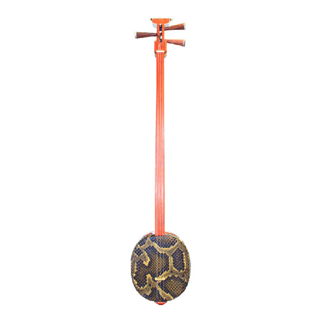
SanXian
One of China’s most traditional plucked string instruments, the Chinese sanxian has been passed down over many generations. It also the cousin of the Shamisen.
Percussion:
In chinese it
call DaJi, is a term that refers to an eclectic mix of Western and Chinese instruments.
In recent years, the Chinese Orchestra has adopted, among other western percussion instruments, the timpani,
glockenspiel, xylophone, vibraphone, snare drum and triangle into its ensemble. Likewise, the Western symphonic
orchestra adopted traditional Chinese instruments like the diyin daluo (tam tam), muyu (temple blocks), dabo (Chinese crash cymbals) and the bangzi (Chinese claves) into theirs.
As such, there is no limit to the numbers and types of instruments used, or combinations that can be followed.
-
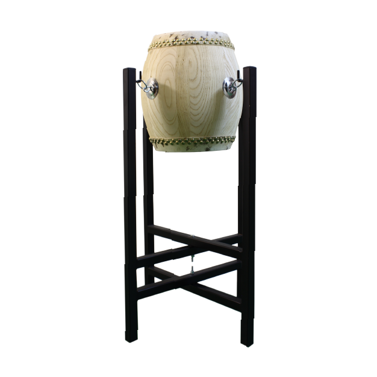
Drum(Gu)
The dagu (Chinese bass drum) is an umbrella term for two kinds of Chinese drums in the Chinese orchestra, the huapengu - which is made in the shape of a flower pot - and the datanggu/ganggu, which has a broad base. -
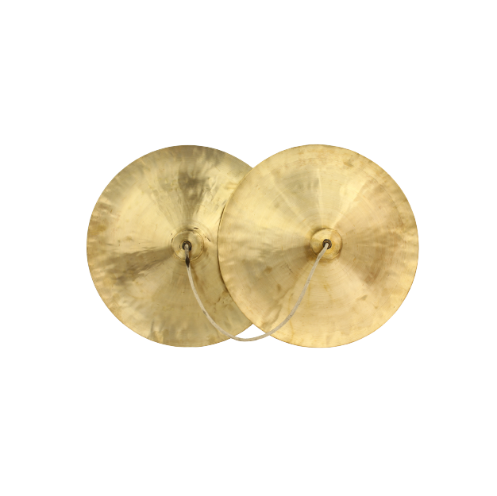
Cymbal
Bo or Chinese cymbalsis commonly remembered as two circular discs with red-ribbon handles attached, and its role in operas, folk songs and religious processions is irreplaceable. -
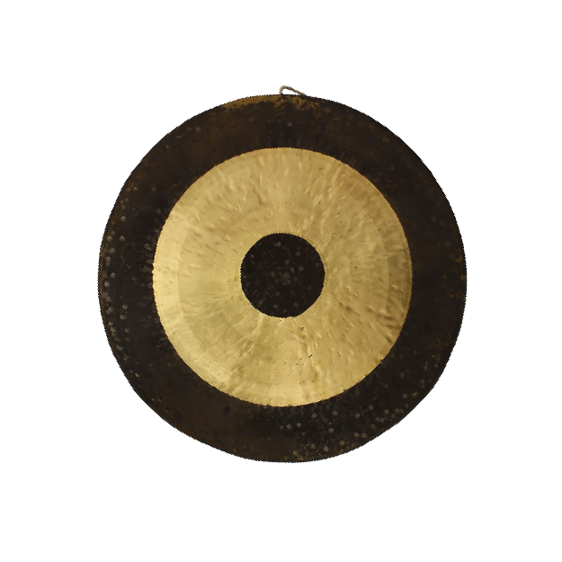
Gong
In the world of Chinese percussion, Chinese gongs are significantly indispensable. Typically cast from bronze and shaped like plates, the use of these instruments can be traced back to the Northern Wei (6th century) period.